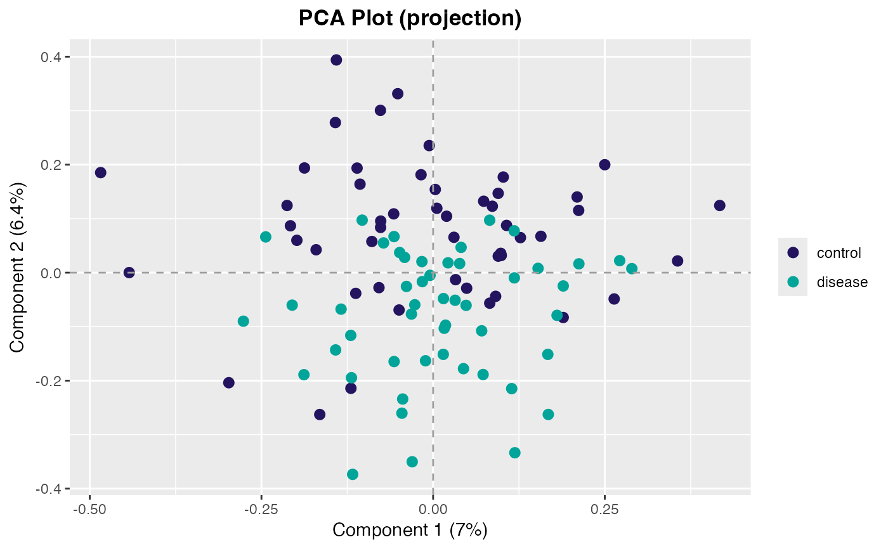
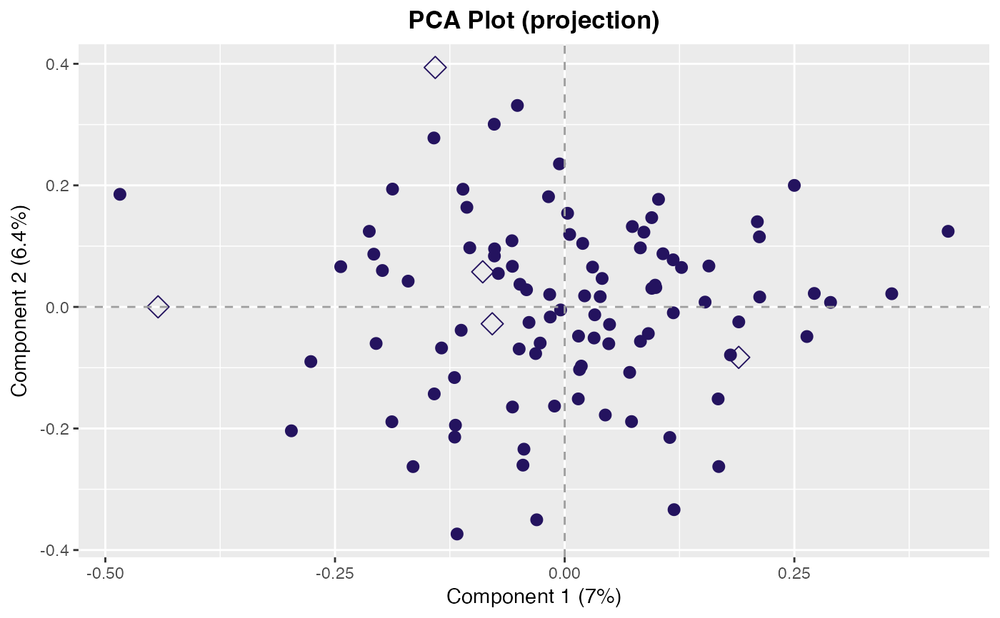
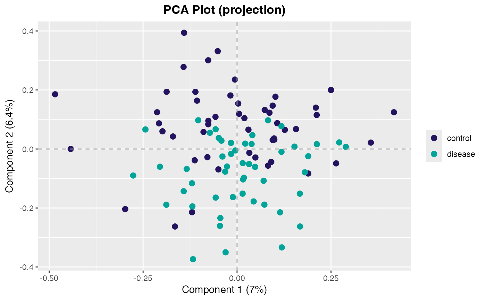
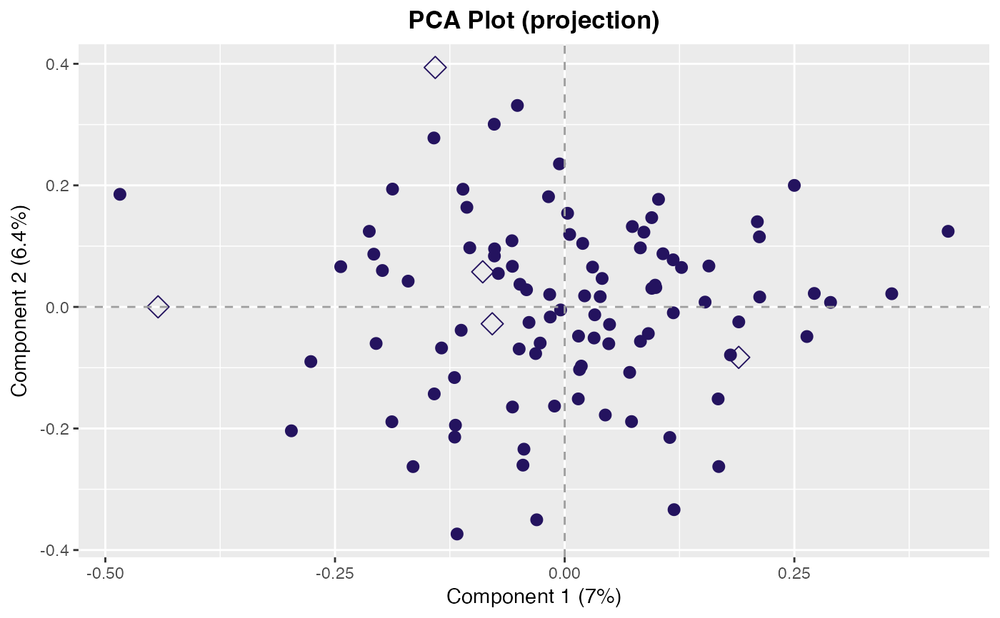

Plot PCA Projection
plot_projection.RdPlot the samples from a PCA projection in a 2-dimensional scatter plot.
Usage
plot_projection(
data.prcomp,
dims = 1:2L,
classes = NULL,
scores = NULL,
col = NULL,
samples = NULL,
pt_cex = 2.5,
...
)Arguments
- data.prcomp
A prcomp class object. Typically the object returned by
prcomp2().- dims
integer(2). Which dimensions to plot.- classes
Optional. A vector indicating the classes of samples used for coloring the points. Must be the same length as the number of samples.
- scores
Optional. Statistical scores to pass through for the coloring of the points during plotting. If a training data set is passed and
scores = NULL, then KS-distances (scores) will be calculated under the hood and used to determine point color. Can be either a single value (e.g. "red") or a vector of color values the same length as the number of observations. This overrides the point color assigned byclassesabove.- col
character(1). The color of the points. Can be either a single value (e.g. "red") or a vector of color values the same length as the number of observations. This parameter overrides the point colors determined by both theclassesandscoresparameters above.- samples
Optional. A vector of sample IDs to mark on the projection plot. Specified samples are marked with a hollow diamond (see
pch()).- pt_cex
numeric(1). Character expansion for the points.- ...
Additional arguments passed to
plot_pca_dims().
See also
Other PCA plots:
plot_pca_dims(),
plot_rotation(),
screeplot_auc()
Examples
pca <- center_scale(pcapkg:::log10_ft(simdata), center = TRUE, scale = FALSE) |>
feature_matrix() |>
prcomp2()
# Define color of points
plot_projection(pca, col = "green")
 # Use classes to define point colors
plot_projection(pca, classes = simdata$class_response)

# Mark specific samples
plot_projection(pca, samples = rownames(simdata)[1:5L])

# Use classes to define point colors
plot_projection(pca, classes = simdata$class_response)

# Mark specific samples
plot_projection(pca, samples = rownames(simdata)[1:5L])
